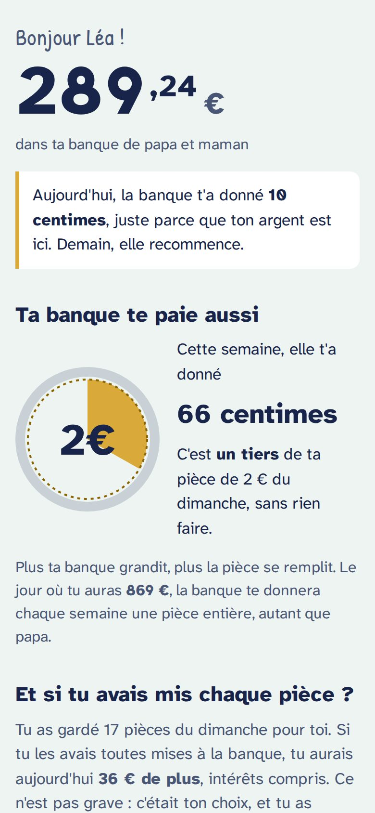
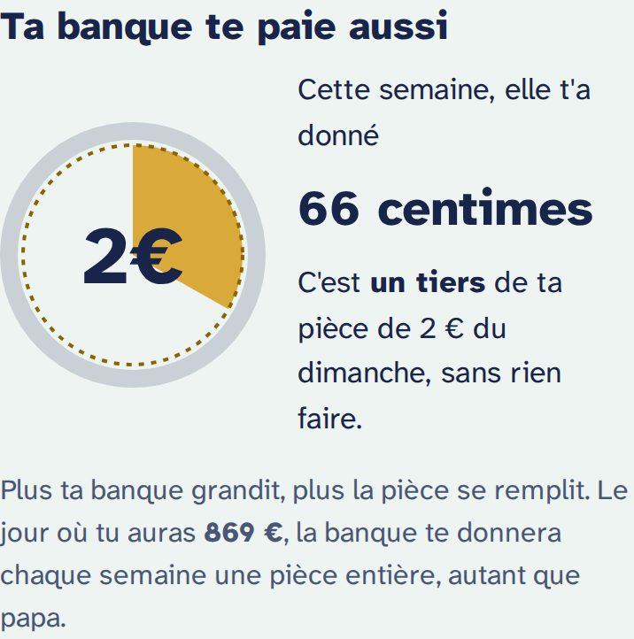
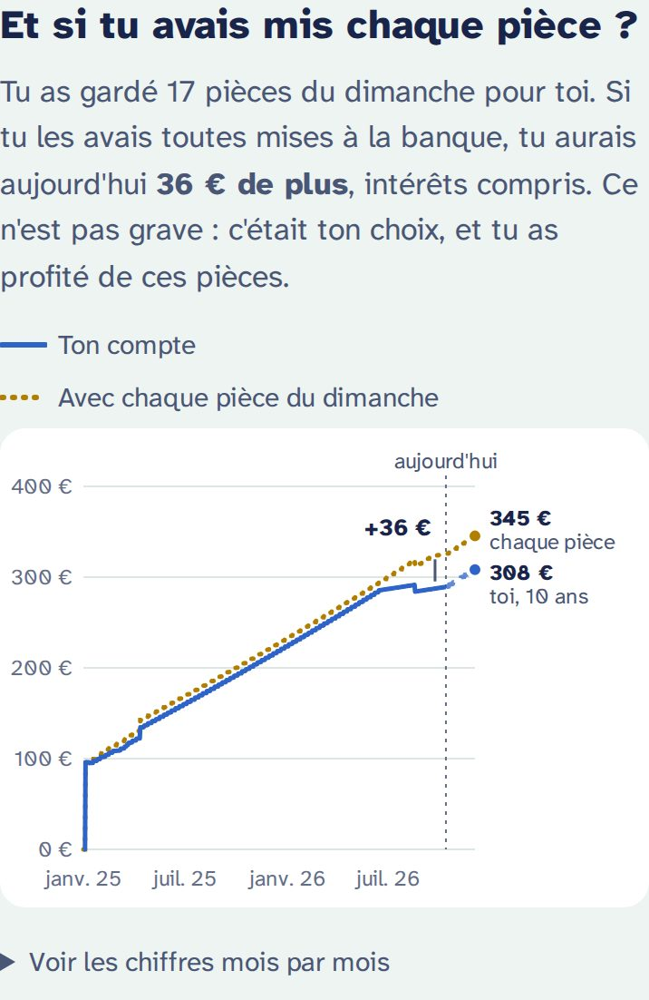
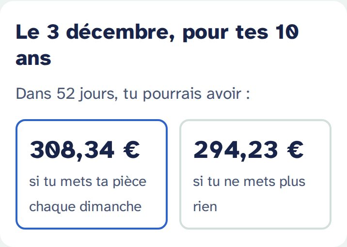
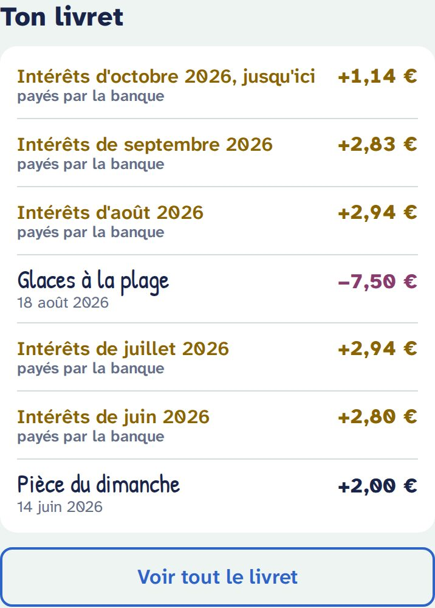
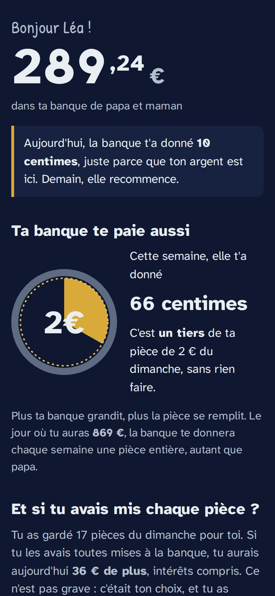

Ce que voient les enfants
Ton enfant a sa propre page, qui s'ouvre comme une app depuis son écran d'accueil. Il regarde, il ne peut rien modifier. Voici ce qu'il y trouve, de haut en bas.
Son argent, et ce que la banque lui a donné aujourd'hui
« Bonjour Léa ! », puis le solde en grand. Juste dessous : « Aujourd'hui, la banque t'a donné 10 centimes, juste parce que ton argent est ici. Demain, elle recommence. »
Les intérêts sont calculés chaque jour sur l'argent de la veille. C'est le cœur de l'idée : l'argent qui reste à la banque grandit tout seul, un peu chaque jour.

« Ta banque te paie aussi » : la pièce qui se remplit
Une pièce de 2 € se remplit avec les intérêts de la semaine : « un tiers de ta pièce du dimanche, sans rien faire ». Plus la banque grandit, plus la pièce se remplit.
Dessous, un objectif concret : « Le jour où tu auras 869 €, la banque te donnera chaque semaine une pièce entière. »

« Et si tu avais mis chaque pièce ? »
- La ligne bleue : son compte. Pleine jusqu'à aujourd'hui, en pointillés ensuite (« si tu continues »).
- La ligne dorée en points : ce qu'il aurait s'il avait mis à la banque chaque pièce qu'il a gardée.
L'écart est expliqué sans reproche : « Ce n'est pas grave : c'était ton choix, et tu as profité de ces pièces. » En touchant le graphique, on voit les montants à chaque date. « Voir les chiffres mois par mois » donne le tableau.
Seules les pièces que tu as marquées gardées comptent ici. Un dimanche encore « à rattraper » ne compte jamais contre ton enfant.

Pour son anniversaire
Deux avenirs côte à côte : ce qu'il pourrait avoir à son prochain anniversaire s'il met sa pièce chaque dimanche, et s'il ne met plus rien. Sans anniversaire, la carte parle de « dans 6 mois ».

Son livret
Comme un vrai livret d'épargne, du plus récent au plus ancien :
- les dépôts et retraits, avec la note que tu as écrite pour lui, dans une écriture à la main ;
- les pièces du dimanche mises à la banque ;
- chaque mois, une ligne dorée « Intérêts de septembre 2026, payés par la banque ».

Ce qu'il ne voit jamais
- Tes notes privées. Elles ne quittent pas ton espace parent : elles ne sont même pas dans le fichier chiffré de ton enfant.
- Aucun bouton pour modifier quoi que ce soit, et aucun chemin vers ton espace parent.
Bon à savoir
- Sans réseau : une fois ouverte, la page s'affiche aussi hors connexion, avec « Mis à jour le … ». Les intérêts du jour sont recalculés sur le téléphone.
- Mise à jour : ton enfant voit tes changements la prochaine fois qu'il ouvre sa page.
- Plusieurs enfants sur un même appareil : l'app demande « Qui regarde sa banque ? », et propose « Changer d'enfant » en bas de page.
- La langue est celle que tu choisis dans tes réglages, quel que soit le réglage de son téléphone.
- La page suit le mode sombre du téléphone.
- Lien perdu ou partagé par erreur : crée un nouveau lien depuis ton espace. L'ancien affiche « Ce lien n'est plus valable. Demande un nouveau lien à tes parents. »

En parler ensemble
- Regardez la pièce ensemble chaque semaine : « Tu vois, la banque t'a donné un tiers de pièce cette semaine, sans que tu fasses rien. »
- Garder une pièce, c'est permis. La courbe dorée montre ce que ça coûte, sans gronder. C'est son choix.
- Les deux avenirs de l'anniversaire rendent concrète une idée abstraite : attendre rapporte.
- Le taux de 12 % est volontairement généreux pour que ça se voie. Une vraie banque donne beaucoup moins : c'est une bonne occasion d'en parler, plus tard.